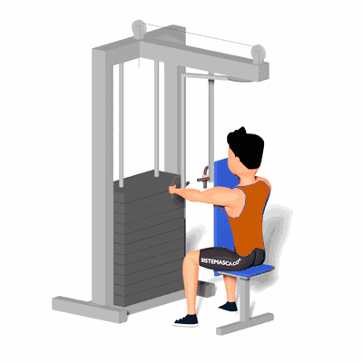

Crucifixo Inverso no Peck Deck com Pegada Neutra

É um excelente exercício para o treino das costas. Ele proporciona benefícios como o fortalecimento e definição dos músculos do membro superior, melhora a postura e ainda irá corrigir o desequilíbrio muscular.
Ficha Técnica
Tipo: Musculação
Grupo Muscular: Costas
Aparelho: Nenhum
Músculos: Nenhum
Como realizar
- Sente-se de frente para o aparelho com o peito apoiado no encosto do banco e agarre os pegadores com pegada neutra;
- Os cotovelos devem ficar levemente flexionados e apontando para os lados, a coluna reta e os ombros encaixados para trás;
- Agora, puxe os pegadores para trás, realizando um movimento semi circular com os braços até os cotovelos ficarem ao lado do tronco;
- Faça o movimento até sentir os músculos da parte posterior dos ombros contraírem bem;
- Então, retorne os braços lentamente de volta para a posição inicial do exercício;
- Faça o movimento pelo número de repetições recomendado pelo professor.
 RC STORE
RC STORE